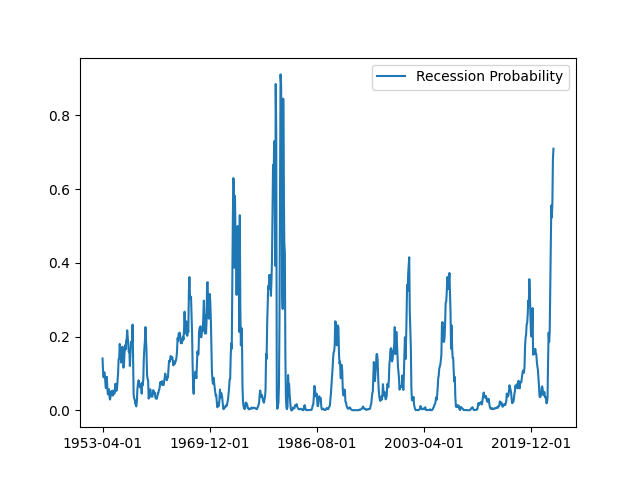

An Introduction to Predicting Recessions
Table of Contents
1. Overview
We'll use the methods in this paper (Estrella, Arturo and Trubin, Mary, 2006) to predict recession via the yield curve. The model uses a long minus short-term interest rate spread as the single input variable. The spread is calculated using Treasury yields and is the 10 year minus the 3 month. We'll pull Treasury yields via the FRED API. The API codes are:
| 10 year | GS10 |
| 3 month | TB3MS |
import pandas as pd from fredapi import Fred from scipy import stats import matplotlib.pyplot as plt
2. Implementation
2.1. Data Preparation
The code below gathers the data.
key = pd.read_table("~/fred_api_key_pythoninfinance.txt") key = str(key.columns.values[0]) fred = Fred(api_key=key) ten_yr = fred.get_series('GS10') three_mo = fred.get_series('TB3MS') data = pd.concat([ten_yr, three_mo], axis=1, join='inner') data.columns = ['long', 'short'] data
long short
1953-04-01 2.83 2.19
1953-05-01 3.05 2.16
1953-06-01 3.11 2.11
1953-07-01 2.93 2.04
1953-08-01 2.95 2.04
... ... ...
2023-01-01 3.53 4.54
2023-02-01 3.75 4.65
2023-03-01 3.66 4.69
2023-04-01 3.46 4.92
2023-05-01 3.57 5.14
[842 rows x 2 columns]
data.to_csv("treasury_data.csv")
data = pd.read_csv("treasury_data.csv", index_col=0)
2.2. Model
The predictive model is in a simple probit form:
\[P(R_{t+12}) = F(\alpha + \beta S_t)\]
where:
- \(F\) denotes the cumulative normal distribution function.
- \(S_t\) is the spread between short and long term interest rates at time t.
- \(\alpha\) and \(\beta\) are estimated parameters.
(Estrella, Arturo and Trubin, Mary, 2006) estimated \(\alpha\) and \(\beta\) to be -0.6045 and -0.7374 respectively.
rec_prob = stats.norm.cdf(-0.6045 - 0.7374 * (data["long"] - data["short"])) rec_prob = pd.DataFrame(rec_prob) rec_prob = rec_prob.set_index(data.index) rec_prob.columns = ["Recession Probability"] rec_prob.plot.line() plt.savefig('recession_probability.png', format='png')
None

3. References
Estrella, Arturo and Trubin, Mary (2006). The yield curve as a leading indicator: Some practical issues, Current issues in Economics and Finance.